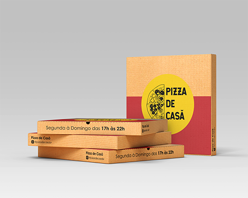
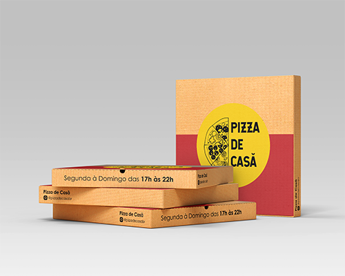
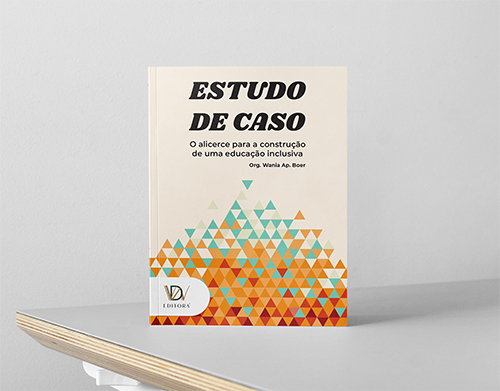
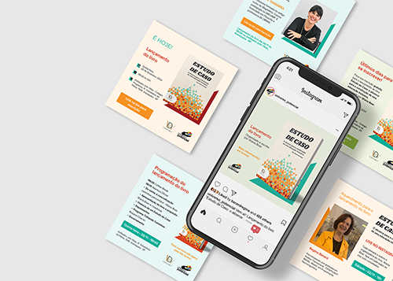
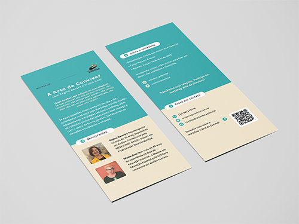
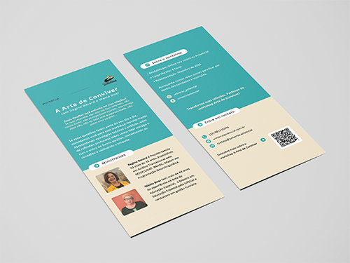

Main Projects
■ Program "Trilhando Caminhos"

■ Book “Estudo de Caso: o alicerce da construção de uma educação inclusiva”




■ Website universopotencial.com.br

■ Workshop “A Arte de Conviver”
 

■ Synchronous online course “EDUCAR: o que é e como fazer hoje?”


■ Asynchronous online course “Adequações Curriculares: da teoria à”

■ Synchronous online course “Criando seu filho para ser feliz”